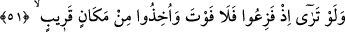
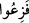
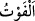
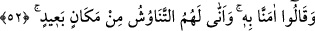

Kötülük yapan da mutlaka karşılığını bulur.
Nâbiğa müslüman olduğu zaman ona “Sâbiî mi oldun?” yâni Muhammed (s.a.)’e îman
mı ettin?” denildi. O da: “Evet, O Allah’ın kitabından üç âyetle bana üstün geldi. Ben
de bu âyetlerin kafiyesine uygun olarak üç beyit söylemek istedim. Fakat bu âyetleri
işitince onlara karşılık şiir söylemek için çok çalıştım, fakat güç yetiremedim. Böylece
Kur’an’ın beşer kelâmı olmadığını anladım. Bu üç âyet bu sûrenin 48, 49 ve 50.
âyetleridir.
51. (Rasûlüm!) Telaşa düştükleri zaman, bir görsen! Artık kurtuluş yoktur, yakın
bir yerden yakalanmışlardır.
Ey Muhammed (s.a.) ya da ey hitabı anlayan ve hitâba elverişli olan kimse! Kâfirler
ölüm anında yahut diriliş veya Bedir gününde feryâd edip “Telaşa düştükleri zaman,
bir görsen!” Elbette müthiş ve vahim bir durum görürdün.
“
” fiil-i mâzî/geçmiş zaman olarak getirilmiştir. Çünkü gerçekleşmesi bakımından
gelecek zaman Allah Teâlâ’ya nisbetle geçmiş zaman gibidir.
İbn Abbâs (r.a.) der ki: “Âhir zamanda Süfyânî ve kavminden seksen bin kişilik bir
ordu çıkacak, Kâbe’yi yıkmak için sefer edecek. Beydâ’ya (el-Kâmûs’ta geçtiği üzere
burası Mekke ile Medine arasında düz bir yerdir) geldikleri zaman yere batırılacaklar.
Onların durumunu haber verecek olan Seriy’den başka onlardan hiç kimse
kurtulamayacak. Bu kimse Cüheyne kabilesindendir. Bundan dolayı “Kesin haber
Cüheyne’dedir” denilmiştir.
Kâşifî der ki: “Bütün askerler içinde iki kişi kurtulur: Biri Mekke’ye müjdeyi götürür.
Diğeri Nâcî-i Cühenî (Kurtulan Cühenî) adındaki kişidir. O arkasına dönüp topluluğun
haberini Süfyânî’ye iletir.”
“Artık” onlar için Allah’ın azabından kaçış ya da korunma ile “kurtuluş yoktur,”
telâşa düşüp feryâd ettikleri şey kendilerini yakalar. “Yakın bir yerden” yerin üstünden
yerin altına veya mahşerden cehenneme ya da Bedir meydanından Bedir kuyusuna
götürülmüşler yahut yere batırıldıkları zaman ayaklarının altından “yakalanmışlardır.”
Nerede olurlarsa olsunlar onlar Allah’a yakındırlar.
Ebû Ubeyde (r.a.): “Bu kuyunun Âd kavmine âid eski bir kuyu olduğunu söylemiştir.
“
” bir şeyin ulaşılması mümkün olmayacak şekilde insandan uzak olmasıdır.